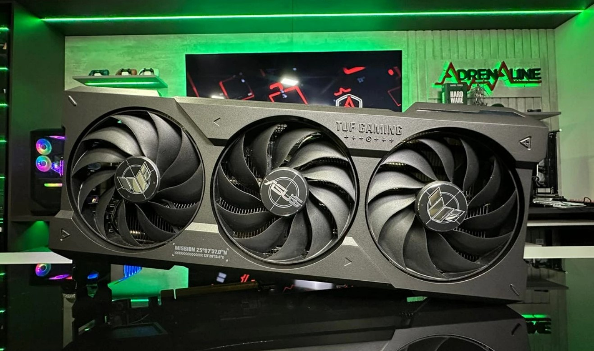
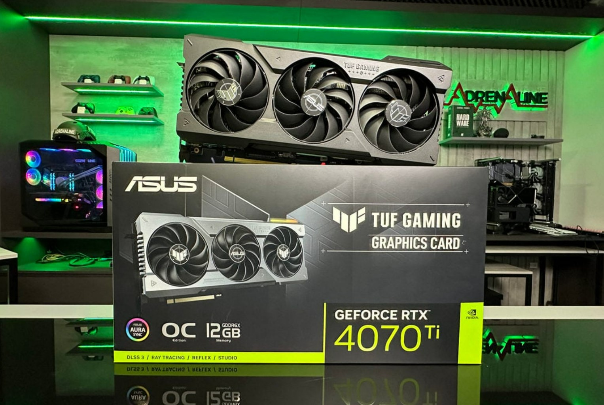
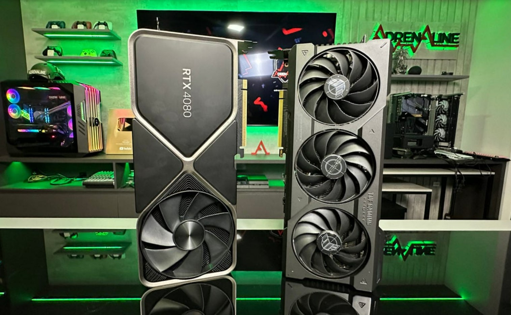
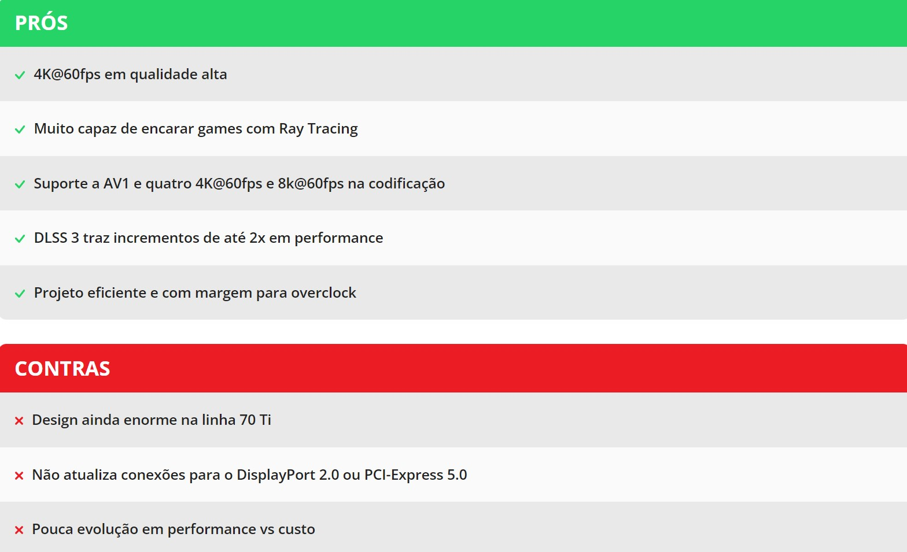

NVIDIA GeForce RTX 4070ti
A RTX 4070 Ti foi introduzida com preço sugerido a partir de US$ 799, 100 dólares mais barato que a “deslançada” RTX 4080 12GB. A RTX 4080, até então a mais barata RTX 40, saía por nada menos que 1.199 dólares, e a antecessora nominal, a RTX 3070 Ti, foi anunciada por US$ 599, mas ainda hoje é encontrada por valores maiores que esse. A principal rival é a Radeon RX 7900 XT, com preço sugerido de US$ 899. No Brasil seu preço sugerido é de R$ 7.199, colocando ela próxima do preço cobrado na RTX 3080 Ti e Radeon RX 6900 XT, atualmente, e uns R$ 1 mil abaixo da RX 7900 XT.
A RTX 4070 Ti
A GeForce RTX 4080 é baseada no chip AD104, com um total de 7680 núcleos CUDA, capazes de atingir 40 TFLOPS através do shadders, combinados com 60 núcleos RT da terceira geração da tecnologia da Nvidia, atingindo até 93 RT-TFLOPS e 240 núcleos tensores da quarta geração podendo operar em até 641 Tensor-FLOPS através da técnica de esparcividade (dispersividade).
Acompanhando a melhoria de outras placas da linha RTX 40, há uma grande quantidade de cache nível 2 (L2 cache). Enquanto a RTX 3080 Ti trazia aproximadamente 6MB de L2 cache, esse valor sobe para 49MB na RTX 4070 Ti. Falando em memórias, a RTX 4070 Ti traz 12GB GDDR6X em uma interface de 192-bit, operando em 10500MHz.
A RTX 4070 Ti é menos exigente que a 4080 e especialmente a 4090, mas ainda é uma placa de demanda alta de energia. Precisa de dois conectores de 8 pinos no padrão ATX 2.0 (o tradicional) ou um conector ATX 3.0 (também chamado PCIe 5.0) com 300W de alimentação. A fonte recomendada pela Nvidia é uma de 700W.
Conclusão
A RTX 4070 Ti mostra como não ter a RTX 4080 12GB fez mal para os lançamentos das RTX 40. Com a RTX 4090 custando o que a gente espera de uma placa da série 90, e a RTX 4080 “16GB” se mostrando um lançamento decepcionante, as Ada Lovelace só fizeram sentido pra galera com muito, mas muito dinheiro.
Uma placa de mais de R$ 7 mil está longe de democratizar a nova geração da Nvidia, mas é um avanço enorme comparado ao que a RTX 4080 tem para oferecer. Apesar de trazer uma redução de 15 a 20% em desempenho, a 4070 Ti traz o custo bem inferior, o que torna a 4070 Ti não apenas mais interessante que a 4080, como também potencialmente a melhor opção RTX 40 até o momento.
Mesmo com as reduções, a RTX 4070 Ti ainda tem fôlego para encarar bem um gameplay em 4K em qualidade Ultra a 60FPS, mesmo envolvendo o Ray Tracing, resultado a boa performance das GeForces com essa tecnologia aliado aos excelentes incrementos de performance via Nvidia DLSS ou AMD FSR. Ela também segue contando com o trunfo do DLSS 3 em alguns games, ampliando bastante a diferença em favor da Nvidia na disputa com a AMD em games de gráficos pesados, especialmente aqueles não competitivos.
A GeForce RTX 4070 Ti é mais barata que rival RX 7900 XT entregando quase a mesma performance em rasterização, se saindo melhor em Ray Tracing, e disparando na frente com o DLSS 3.
Games mais pesados em RT podem levar a configuração no Alto ou a troca pelo 1440p, que é a resolução que a Nvidia tem direcionado esse placa. Ela tem plenas condições de encarar 4K, mas quem não quer abrir mão da configuração Ultra, ou está focado mais em altas taxas de quadro, pode preferir o uso dessa placa em Quad HD.
Na comparação com a rival AMD, há uma vantagem de uns 15% em favor da Radeon RX 7900 XT quando não temos um uso intensivo de Ray Tracing no game, com ambas as placas empatando ou a RTX 4070 Ti ficando levemente na frente em games pesados em RT. Essa diferença volta a ficar ainda maior em favor da GeForce se o DLSS 3 é habilitado, sendo que esses cenários, com baixas taxas de FPS e muitos filtros pesados ou gargalo pesado de CPU, são justamente os momentos em que a tecnologia “brilha”. A Radeon já não tinha ganhando muito do nosso carinho, agora deixa de ter sentido versus essa concorrente.
Falando agora mais especificamente do modelo da ASUS TUF do chip RTX 4070 Ti, a placa mostrou ter fôlego e margem para levar esse chip gráfico ao seu limite. Ela já vem com um overclock de fábrica, e ainda assim conseguimos colocar mais 200MHz extra de OC, o que resultou em… reduções de temperatura! Apesar de parecer um paradoxo, é normal o overclock eventualmente reduzir a temperatura, com a placa rodando as fans mais rapidamente para compensar o aquecimento extra. Mesmo após o overclock, a placa segue produzindo pouquíssimo ruído, mostrando a robustez deste modelo da ASUS, e as margens de OC que ele proporciona.
Infelizmente a evolução do “performance vs custo” foi muito baixa com esse lançamento, dependendo do DLSS 3 para mostrar ganhos substanciais.
Mesmo sendo uma evolução, especialmente comparado ao que a RTX 4080 tem a oferecer na relação entre custo e performance, a geração 40 continua um avanço modesto frente ao que já possuíamos. Com preço de R$ 7 mil, essa placa chega custando o valor cobrado atualmente RTX 3080 Ti e na Radeon RX 6900/6950 XT . Ou seja, temos um incremento de… 10%, talvez 15%, na performance que a Nvidia tem para oferecer para esse segmento de preço. Com DLSS 3 temos possibilidade de tirar mais performance em alguns cenários relevantes, mas ainda assim, vemos como a série 40 é um ciclo de ganhos modestos de desempenho e custo comparado ao que as gerações anteriores já estão nos oferecendo, precisando do DLSS 3 para trazer algum ganho mais relevante de performance.
